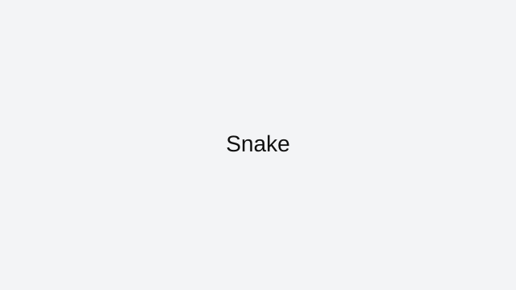

Snake
Snake is a pure positioning game. Every apple increases your future difficulty, so early habits decide whether you survive late rounds.
How to approach this game
Aim for smooth loops instead of aggressive cutbacks. Keep your path open and avoid boxing yourself into small pockets. When your snake is long, think two or three turns ahead before taking food near edges.
Common mistakes to avoid
Common losses come from greedy food grabs and last-second reversals that close your own lane. A slower, cleaner loop is usually better than a risky shortcut.
Who this game is best for
Snake is great for players who want a quick game with clear rules and a high skill ceiling built around patience and spacing.
Why it stays in our curated index
Snake stays in ArcadeZone's reviewed collection because it has a clear skill loop, reliable browser access, and enough real gameplay depth to justify written guidance. We do not keep indexed pages that only repeat generic descriptions or send users to thin external links.
Best session style for this game
Featured picks are chosen because they stay enjoyable even in quick sessions and still offer room to improve after the basics click.
Related reviewed games: 2048, Pac-Man, Flappy Bird.
ArcadeZone reviews this title for accessibility, control clarity, and replay value before keeping it in the curated index. Our goal is to help players choose the right game quickly, then improve through practical guidance instead of generic filler text.
What you'll love
- Curated review page with practical strategy guidance and clean navigation.
- Direct access to browser gameplay source with no installs required.
- Category fit: Featured gameplay style with related recommendations.
Game essentials
- Category: Featured
- Game type: Classic
- Page status: Indexed (reviewed)
- Play format: opens the original browser source in a new tab

How to play
Use the built-in browser controls shown by the game source and focus on timing plus positioning to improve consistency.
Tips & Tricks
- Aim for smooth loops instead of aggressive cutbacks. Keep your path open and avoid boxing yourself into small pockets. When your snake is long, think two or three turns ahead before taking food near edges.
- Common losses come from greedy food grabs and last-second reversals that close your own lane. A slower, cleaner loop is usually better than a risky shortcut.
- Practice in short sessions and track one improvement goal per run to build measurable progress.
Frequently asked questions
Why do I lose near high scores?
Late-game losses usually come from tight turns and greedy food grabs. Keep larger loops and open exits.
Should I move fast in Snake?
Consistency is more important than speed. Clean routes produce better long runs.
What is a good beginner strategy?
Stay near the outer area, build smooth loops, and avoid cutting across your own body.
Play
Use the verified source link below to launch the game in a new tab.
Open Snake (external)Related games
Related reviewed games: 2048, Pac-Man, Flappy Bird.
More from ArcadeZone
Developer & Credits
ArcadeZone reviews Snake for control clarity, replay value, and accessibility before listing it as curated content. We link to the original browser source and provide player-focused guidance on this page.